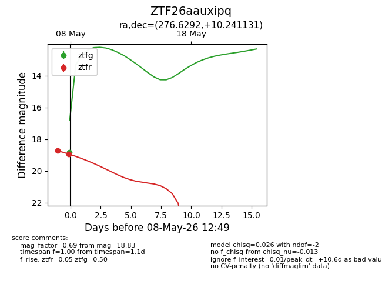
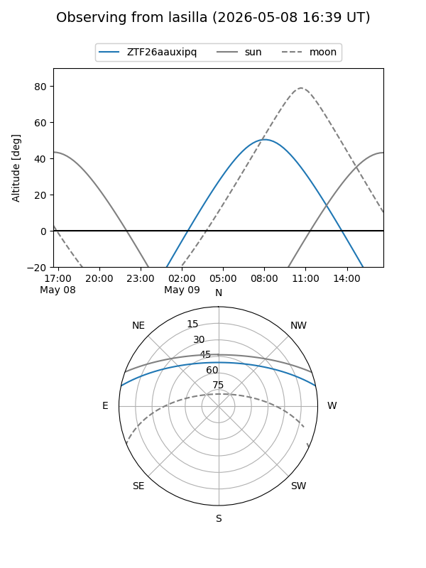
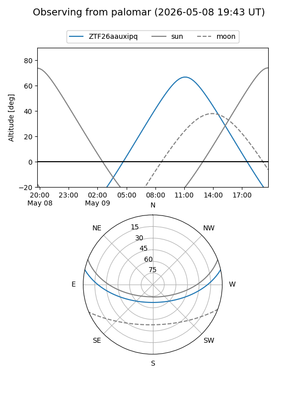
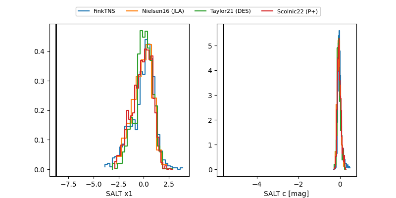

ZTF26aauxipq
Target ZTF26aauxipq at 2026-05-08 12:51
Aliases and brokers:
FINK: link
Lasair: link
ALeRCE: link
alt names
ZTF26aauxipq (ztf,fink_ztf)
Coordinates:
equatorial (ra, dec) = 276.6292,+10.24113
equatorial (HMS+DMS) = 18:26:31.00,+10:14:28.07
galactic (l, b) = (39.3207,+10.14369)
Flags:
Photometry:
last ztfg=18.83, ztfr=18.96
1 ztfg, 2 ztfr detections
Lightcurve

Visibility


Additional plots
